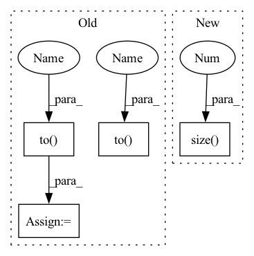

Pattern ID :8704

Before Change
adj_matrix = to_scipy_sparse_matrix(edge_index, att_score.detach())
adj_matrix = normalize(adj_matrix, axis=1, norm="l1")
row, col = edge_index.tolist()
att_score_norm = torch.tensor(adj_matrix[row, col]).to(x).view(-1)
if self.add_self_loops:
degree = adj_matrix.getnnz(axis=1)
self_weight = torch.tensor(1.0 / (degree + 1)).to(x)
att_score_norm = torch.cat([att_score_norm, self_weight])
loop_index = torch.arange(0, adj_matrix.shape[0], dtype=torch.long,
device=edge_index.device)
loop_index = loop_index.unsqueeze(0).repeat(2, 1)
After Change
dim_size=x.size(0))
self_weight = 1.0 / (degree + 1)
att_score_norm = torch.cat([att_score_norm, self_weight])
loop_index = torch.arange(0, x.size(0), dtype=torch.long,
device=edge_index.device)
loop_index = loop_index.unsqueeze(0).repeat(2, 1)
edge_index = torch.cat([edge_index, loop_index], dim=1)
In pattern: SUPERPATTERN
Frequency: 3
Non-data size: 4
Instances
Fragment ID: 32368145
Project Name: edisonleeeee/greatx
Commit Name: 234be152fefb46d57c7f70d437d2cd2d54c5a658
Time: 2022-11-16
Author: cnljt@outlook.com
File Name: greatx/defense/gnnguard.py
M Class Name: GNNGUARD
N Class Name: GNNGUARD
M Method Name: forward(4)
N Method Name: forward(4)
M Parent Class: torch.nn.Module
N Parent Class: torch.nn.Module
M File Name: greatx/defense/gnnguard.py
N File Name: greatx/defense/gnnguard.py
M Start Line: 38
M End Line: 49
N Start Line: 40
N End Line: 52
'>
Before Change
adj_matrix = to_scipy_sparse_matrix(edge_index, att_score.detach())
adj_matrix = normalize(adj_matrix, axis=1, norm="l1")
row, col = edge_index.tolist()
att_score_norm = torch.tensor(adj_matrix[row, col]).to(x).view(-1)
if self.add_self_loops:
degree = adj_matrix.getnnz(axis=1)
self_weight = torch.tensor(1.0 / (degree + 1)).to(x)
att_score_norm = torch.cat([att_score_norm, self_weight])
loop_index = torch.arange(0, adj_matrix.shape[0], dtype=torch.long,
device=edge_index.device)
loop_index = loop_index.unsqueeze(0).repeat(2, 1)
After Change
dim_size=x.size(0))
self_weight = 1.0 / (degree + 1)
att_score_norm = torch.cat([att_score_norm, self_weight])
loop_index = torch.arange(0, x.size(0), dtype=torch.long,
device=edge_index.device)
loop_index = loop_index.unsqueeze(0).repeat(2, 1)
edge_index = torch.cat([edge_index, loop_index], dim=1)
'>
Fragment ID: 32368147
Project Name: edisonleeeee/graphwar
Commit Name: 234be152fefb46d57c7f70d437d2cd2d54c5a658
Time: 2022-11-16
Author: cnljt@outlook.com
File Name: greatx/defense/gnnguard.py
M Class Name: GNNGUARD
N Class Name: GNNGUARD
M Method Name: forward(4)
N Method Name: forward(4)
M Parent Class: torch.nn.Module
N Parent Class: torch.nn.Module
M File Name: greatx/defense/gnnguard.py
N File Name: greatx/defense/gnnguard.py
M Start Line: 38
M End Line: 49
N Start Line: 40
N End Line: 52
'>
Before Change
def forward(self, features, device):
input0 = features[2]
h0 = torch.zeros(self.num_layers, input0.size(0),
self.hidden_size).to(device)
c0 = torch.zeros(self.num_layers, input0.size(0),
self.hidden_size).to(device)
out, _ = self.lstm(input0, (h0, c0))
out = self.attention_net(out)
out = self.fc(out[:, -1, :])
return out
After Change
def forward(self, features, device):
inp = features[0]
self.sequence_length = inp.size(1)
out, _ = self.lstm(inp)
out = self.attention_net(out, device)
out = self.fc1(out)
out = self.fc2(out)
'>
Fragment ID: 32368146
Project Name: logintelligence/logadempirical
Commit Name: a67d9fc74c175ac3aa700fe533e22a6fe62290ab
Time: 2021-06-23
Author: c3363046@uon.edu.au
File Name: logbert/logdeep/models/lstm.py
M Class Name: robustlog
N Class Name: robustlog
M Method Name: forward(3)
N Method Name: forward(3)
M Parent Class: nn.Module
N Parent Class: nn.Module
M File Name: logbert/logdeep/models/lstm.py
N File Name: logbert/logdeep/models/lstm.py
M Start Line: 62
M End Line: 70
N Start Line: 73
N End Line: 79